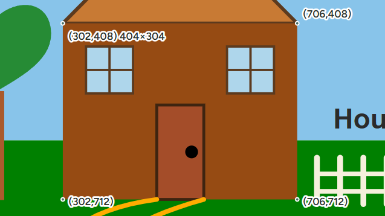
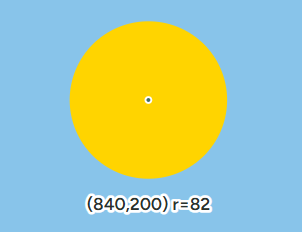
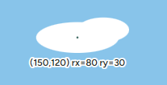
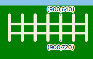
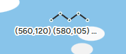
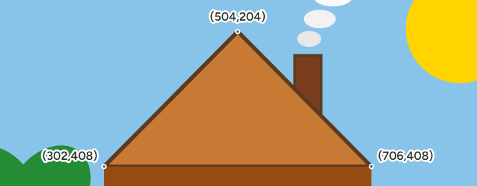
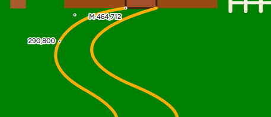
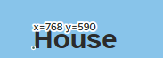
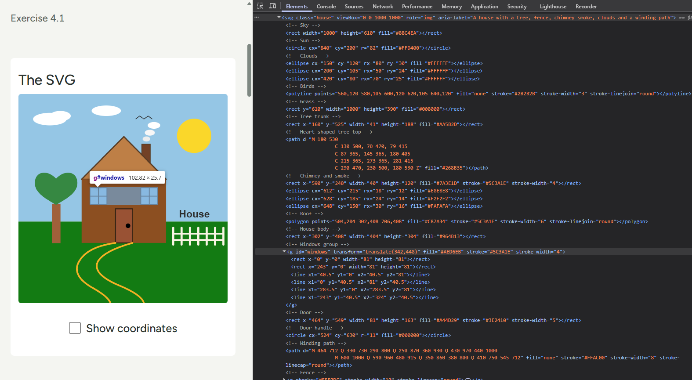

Exercise 4.1
A house drawn with SVG shapes
Basic SVG shapes positioned on a 1000 × 1000 coordinate grid. Turn on the coordinates to see where each shape starts.
The SVG
Coordinate system
The origin (0,0) is the top-left corner of the SVG, x grows to the right and y grows downward. Each screenshot marks one shape's coordinates against its code.

x="302" y="408" width="404" height="304" (house
body)

cx="840" cy="200" r="82" (sun)

cx="150" cy="120" rx="80" ry="30" (cloud)

x1="900" y1="640" x2="900" y2="720" (fence post)

points="560,120 580,105 600,120 620,105 640,120"
(birds)

points="504,204 302,408 706,408" (roof)

M 464 712 Q 330 730 290 800 … (garden path)

x="768" y="590" (sign), the baseline starts at
this point
Group element
The <g> element groups shapes so that attributes
such as fill, stroke and
transform are applied to all children at once.
Here #windows uses translate(342,448), so
both windows are drawn from local (0,0) and (243,0) and moved together
into place.
DOM view
